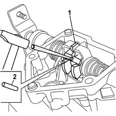
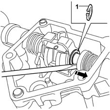
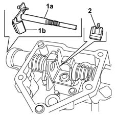
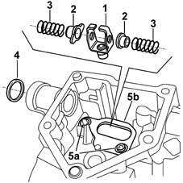
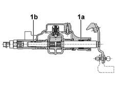
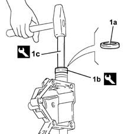
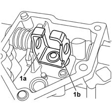
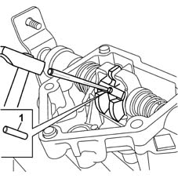
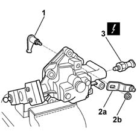

2110C54 gear selection and engagement unit - r r
- Path
- Procedures > 21 GEARBOX > 2110 MANUAL GEARBOX AND DIFFERENTIAL > 2110C gear cases and covers of manual gearbox with differential > 2110C54 gear selection and engagement unit - r r
- Kind
- repair procedure (removal / refitting; the operation number is the code)
- Applies to
- engines: 1.2 8v, 1.2 16v; all production periods
- Interactive page
- https://sloeber94.github.io/elrnDB-lYpsln/en/#/2429774
Applies to: engines: 1.2 8v, 1.2 16v; all production periods
 Dismantling
Dismantling
 Reassembling
Reassembling1. Remove the reversing light switch
 | Name | Connector |
|---|---|---|
1 | Reversing lights switch |
2. Undo the nut (2a) and remove the gear selector outer lever (2b).
3. Remove the gear selection/engagement dog clutch lever complete with O-ring.
Applies to: engines: 1.2 8v, 1.2 16v; all production periods
1. Bring the gear engagement dog clutch into the position shown in the figure by operating the control shaft.
2. Remove the flexible pin with a suitable punch.

Applies to: engines: 1.2 8v, 1.2 16v; all production periods
1. Using leverage, retract the bush and extract the control shaft safety lock circlip.

Applies to: engines: 1.2 8v, 1.2 16v; all production periods
1. Withdraw the control shaft (1a) complete with counterweight (1b).
Undo the bolts and detach the control shaft counterweight.
2. Remove the gear engagement dog clutch.

Applies to: engines: 1.2 8v, 1.2 16v; all production periods
1. Remove the safety lock complete with cap.
2. Remove the bushes.
3. Remove the reaction springs.
4. Remove the oil seal.
5. Undo the bolts (5a) and remove the safety lock mounting bracket (5b).

Applies to: engines: 1.2 8v, 1.2 16v; all production periods
Reassembling
Dismantling1. If the control shaft bushes (1a) and (1b) are worn, replace the complete cover.

Applies to: engines: 1.2 8v, 1.2 16v; all production periods
1. Fit the oil seal (1a) on the gear engagement assembly cover using the fitting tool (1b) with handle (1c).
 | Name | Country |
|---|---|---|
1b | Fitting tool | 1.870.419.000 |
| Name | Country |
|---|---|---|
1c | Grip | 1.870.007.000 |

Applies to: engines: 1.2 8v, 1.2 16v; all production periods
Fit the mounting bracket for the safety lock and fasten it using the bolts.
Fit the bush with the spring, oil seal side.
1. Fit the safety lock (1a) so that the reference (1b) is positioned as illustrated.

Applies to: engines: 1.2 8v, 1.2 16v; all production periods
Fit the control shaft complete with counterweight, the gear engagement dog clutch and bush with spring, reversing light switch side.
Fit the safety lock circlip on the control shaft.
1. Fit the safety lock flexible retaining pin on the control shaft using a suitable punch.

Applies to: engines: 1.2 8v, 1.2 16v; all production periods
1. Fit the control lever for the gear selection/engagement dog clutch.
2. Fit the gear selection outer lever (2a) and tighten the nut (2b) to the specified torque.
 | Fastening | Component | Ø | Value (daNm) |
|---|---|---|---|---|
2b | Nut | M/D G/BOX SPEED ENGAGEMENT OUTER LINK | M8 | 1.5 |
3. Fit the reversing lights switch.
| Name | Connector |
|---|---|---|
3 | Reversing lights switch |
